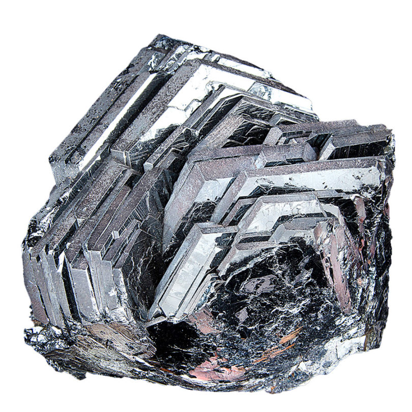

Hematita |

imagem: pedrasecristais.com
|
Identificação |
|
| Fórmula química |
Fe2O3 |
| Classe mineral |
Óxidos |
| Sistema cristalino |
Hexagonal (trigonal) |
Propriedades |
|
| Forma |
Cristais geralmente tabulares espessos a finos segundo cristais usualmente tabulares entre espessos e delgados.
Também em configurações brotoidais e reniformes com estrutura radiada. Pode-se apresentar laminada e especular. |
| Cor |
Idiocromático. A cor vai do castanho avermelhado ao preto. |
| Brilho |
O brilho é metálico nos cristais e opaco nas variedades terrosas. |
| Diafaneidade |
Opaca. |
| Tenacidade |
Quebradiço |
| Fratura |
Subconcoidal, irragular, terrosa. |
| Clivagem |
Não apresenta |
| Birrefringência |
Não se aplica. |
| Propriedades específicas |
Pode apresentar iridescência e pátina. |
| Outras caracteríticas diagnósticas |
Diferencia-se pelo seu TRAÇO CASTANO AVERMELHADO. É comum que as superfícies das fraturas e o
traço sejam vermelho-marrom |
| Análise Qualitativa |
Reduzido a pó dissolve-se lentamente no ácido clorídrico.
A solução clorídrica reagindo com ferrocianeto de potássio produz uma coloração azul intensa
e com sulfocianeto de potássio uma coloração vermelho sangüínea. |
Algunas constantes |
|
| Dureza |
5,5 - 6,5 |
| Peso específico |
5,20 |
| Índice de refração |
2,940 - 3,220 |